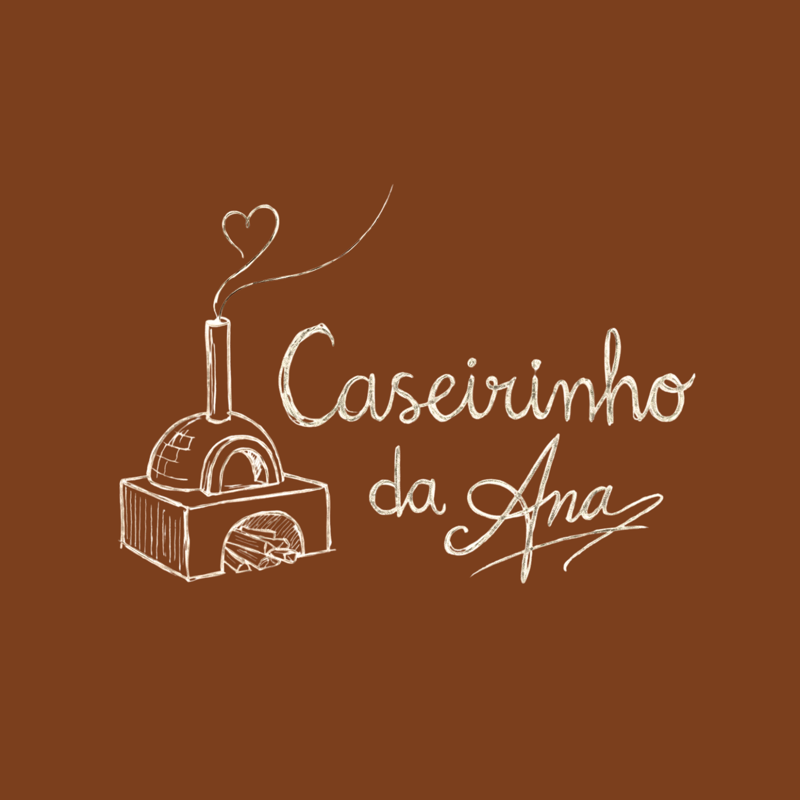
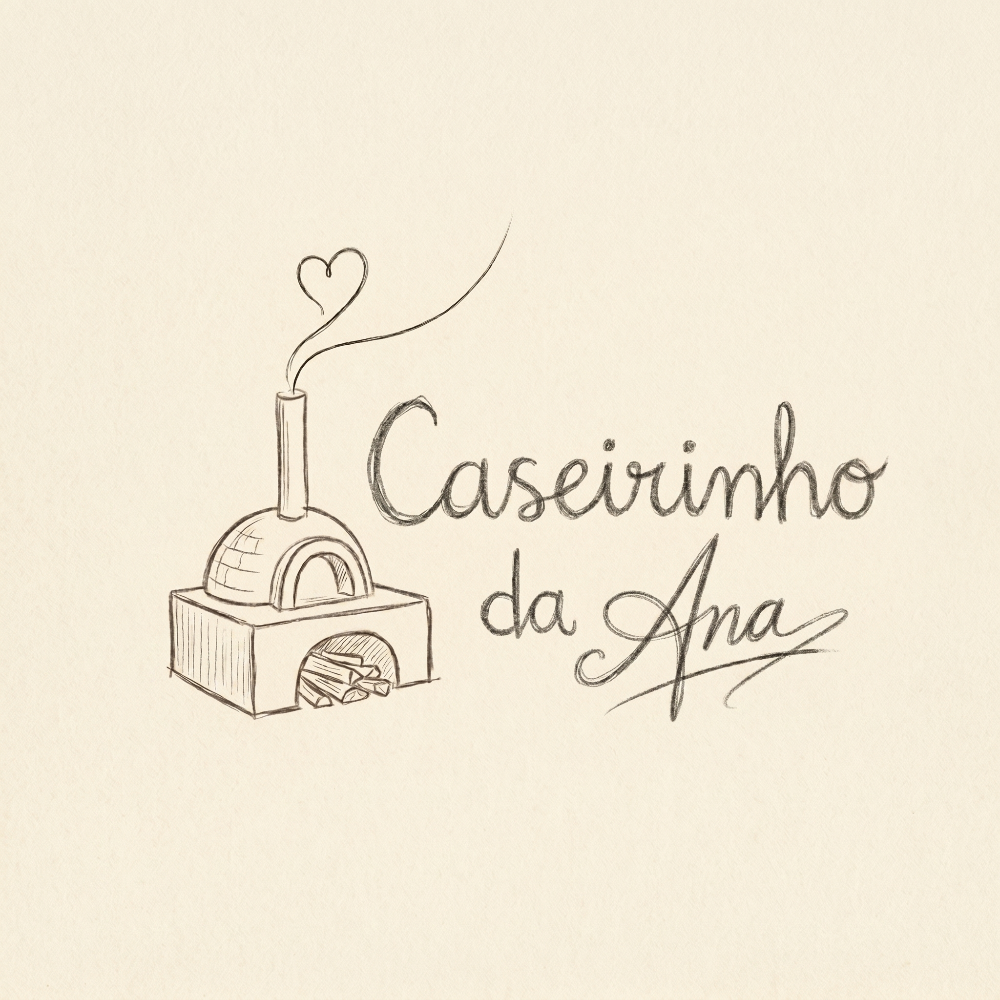

Caseirinho da Ana é bolo de verdade. Feito à mão, com ingredientes simples,
no ritmo do forno e não da pressa. Cada receita carrega o sabor do interior
goiano — onde bolo bom é o que sai do fogão a lenha e se come com café coado.
Propósito
Levar o sabor autêntico do bolo caseiro goiano para a mesa de quem
valoriza o que é feito com alma, tempo e ingredientes de verdade.
Promessa
Todo bolo que sai do forno da Ana tem o mesmo carinho que ela colocaria
se fosse servir para a própria família. Sem atalhos, sem conservantes, sem pressa.
Personalidade
Caipira com orgulho. Acolhedora, genuína, simples sem ser simplória.
A marca fala como gente de casa — com calor, sem frescura, com verdade.
Diferencial
Não é confeitaria de festa. Não é bolo industrializado. É o bolo que
sua avó fazia — mas com a consistência e o cuidado de quem leva isso
a sério como ofício.
02
Logotipo
O logotipo combina um forno a lenha desenhado à mão — símbolo do processo
artesanal — com a assinatura pessoal da Ana. A fumaça que se transforma
em coração é a marca registrada: afeto que sai do forno.
Fundo Claro
Fundo Antigo · Logo Preta

Variação 08
Fundo Creme
Fundo Creme · Logo Branca
Fundo Creme · Logo Preta
Fundo Creme · Logo Escura
Fundo Creme · Desenhada
Fundo Amarelado · Logo Escura
Fundo Creme · Forno Preto
Fundo Escuro / Marrom
Fundo Escuro · Logo Branca
Fundo Marrom Claro · Logo Branca
Fundo Marrom Claro · Logo Branca
Fundo Marrom-Cinza · Logo Branca
Fundo Azul · Logo Branca
Brand Ambassador
Foto Ana
✦
Área de Proteção
Manter sempre uma margem mínima equivalente à altura da chaminé do forno ao redor do logotipo.
◐
Tamanho Mínimo
Nunca aplicar com largura inferior a 40mm em impressos ou 120px em telas digitais.
✕
Não Distorcer
Jamais esticar, comprimir, rotacionar ou alterar as proporções originais do logotipo.
◻
Fundos Limpos
Aplicar somente sobre fundos sólidos ou texturas suaves. Evitar fotos com muito ruído.
03
Paleta de Cores
As cores da marca nascem do cerrado goiano: a terra vermelha, o marrom
do café, o dourado da rapadura, o creme do bolo saindo do forno.
Uma paleta quente, acolhedora e autenticamente brasileira.
Terra Roxa
#7B3F1D
Cor primária
Café Coado
#4A2C17
Textos e ancoragem
Rapadura
#D4A843
Destaques e acentos
Rosa Barro
#C4856A
Apoio e feminilidade
Creme Forno
#FAF3E8
Fundo principal
Sépia
#8B7355
Textos secundários
04
Tipografia
Três famílias tipográficas que equilibram tradição, personalidade e
legibilidade. A combinação reflete a alma da marca: clássico com calor humano.
Playfair DisplayTítulos & Destaques
Bolo é afeto que se come.
A B C D E F G H I J K L M N O P Q R S T U V W X Y Z
a b c d e f g h i j k l m n o p q r s t u v w x y z
0 1 2 3 4 5 6 7 8 9
Regular
400
SemiBold
600
Bold
700
Italic
400i
CaveatAssinaturas & Destaques Afetivos
Feito à mão, com amor
A B C D E F G H I J K L M N O P Q R S T U V W X Y Z
a b c d e f g h i j k l m n o p q r s t u v w x y z
Regular
400
SemiBold
600
Bold
700
LatoCorpo de Texto & Informações
Simplicidade é sofisticação
A B C D E F G H I J K L M N O P Q R S T U V W X Y Z
a b c d e f g h i j k l m n o p q r s t u v w x y z
Light
300
Regular
400
Bold
700
05
Cardápio
Bolos caseiros de verdade. Sabores que remetem ao interior de Goiás,
feitos sob encomenda durante a semana e com pronta-entrega nos finais de semana.
Todos os bolos são feitos artesanalmente, sem conservantes,
com ingredientes selecionados.
Clássicos da Casa
Cenoura com Chocolate
Massa fofinha de cenoura com cobertura generosa de chocolate
Chocolate
Chocolate de verdade, intenso e úmido
Formigueiro
O clássico com granulado de chocolate — infância em cada fatia
Iogurte
Leve, macio e com aquele sabor delicado
Canela
Perfumado e reconfortante, ideal com café
Limão
Cítrico, refrescante e com cobertura azedinha
Raiz Goiana
Fubá Tradição
Receita de avó, textura rústica, sabor do cerrado
Fubá com Goiabada
Fubá cremoso com pedaços de goiabada cascão derretida
Fubá com Erva Doce
Delicadeza goiana — fubá perfumado com erva doce
Milho
Cremoso, feito com milho de verdade, sabor de roça
Milho com Requeijão
A combinação perfeita do interior — doce e salgado
Banana com Canela
Banana caramelizada com canela — aroma que invade a casa
Como Funciona
Segunda a Sexta: somente sob encomenda via WhatsApp.
Pedidos com pelo menos 24h de antecedência.
Sábado e Domingo: pronta-entrega enquanto durar.
Acompanhe os sabores disponíveis pelo Instagram.
06
Tom de Voz
A Caseirinho da Ana fala como gente. Sem formalidade excessiva, sem
forçar intimidade. É a voz de quem te recebe na cozinha com café
passado na hora.
Assim sim
"Saiu do forno agora! Quem quer?"
"Bolo de fubá com goiabada — receita da vó, feito com carinho"
"Encomende o seu pro fim de semana"
"Hoje tem pronta-entrega! Corre que acaba"
Assim não
"Adquira já nosso produto artesanal premium"
"Trabalhamos com os mais finos ingredientes"
"Faça sua reserva através de nossos canais"
"Experimente nossa linha gourmet exclusiva"
🏡
Caseira
Fala como vizinha, não como empresa. Usa linguagem do dia a dia, sem jargão de marketing.
🤎
Genuína
Nunca finge ser o que não é. Se o bolo acabou, acabou. Se ficou incrível, mostra com orgulho.
🌾
Goiana
Tem orgulho da raiz. Usa referências do interior, do cerrado, da cultura local sem ser caricato.
✨
Convidativa
Cada post é um convite. Cada mensagem faz a pessoa querer provar. Desperta desejo com simplicidade.
07
Aplicações
Como a marca vive nos diferentes pontos de contato — do papel kraft
ao feed do Instagram, da mensagem no WhatsApp ao adesivo na caixa.

Embalagem Kraft
Logo em adesivo sobre caixa de papel kraft. Barbante de algodão cru como fechamento. Simples e marcante.
caseirinhodaana
Instagram
Feed com fotos reais dos bolos, luz natural, cenário de cozinha. Stories mostrando o processo.
Caseirinho da Ana
Oi! Tudo bem?
Qual sabor você quer pro fim de semana?
WhatsApp
Atendimento direto, tom pessoal, respostas rápidas. Catálogo do WhatsApp Business com fotos e preços.
Adesivo / Selo
Adesivo circular para selar embalagens e marcar caixas. Diâmetro recomendado: 5cm.
 Fundo Antigo · Logo Preta
Fundo Antigo · Logo Preta
 Fundo Creme · Logo Branca
Fundo Creme · Logo Branca
 Fundo Creme · Logo Preta
Fundo Creme · Logo Preta
 Fundo Creme · Logo Escura
Fundo Creme · Logo Escura
 Fundo Creme · Desenhada
Fundo Creme · Desenhada
 Fundo Amarelado · Logo Escura
Fundo Amarelado · Logo Escura
 Fundo Creme · Forno Preto
Fundo Creme · Forno Preto
 Fundo Escuro · Logo Branca
Fundo Escuro · Logo Branca
 Fundo Marrom Claro · Logo Branca
Fundo Marrom Claro · Logo Branca
 Fundo Marrom Claro · Logo Branca
Fundo Marrom Claro · Logo Branca
 Fundo Marrom-Cinza · Logo Branca
Fundo Marrom-Cinza · Logo Branca
 Fundo Azul · Logo Branca
Fundo Azul · Logo Branca
 Foto Ana
Foto Ana